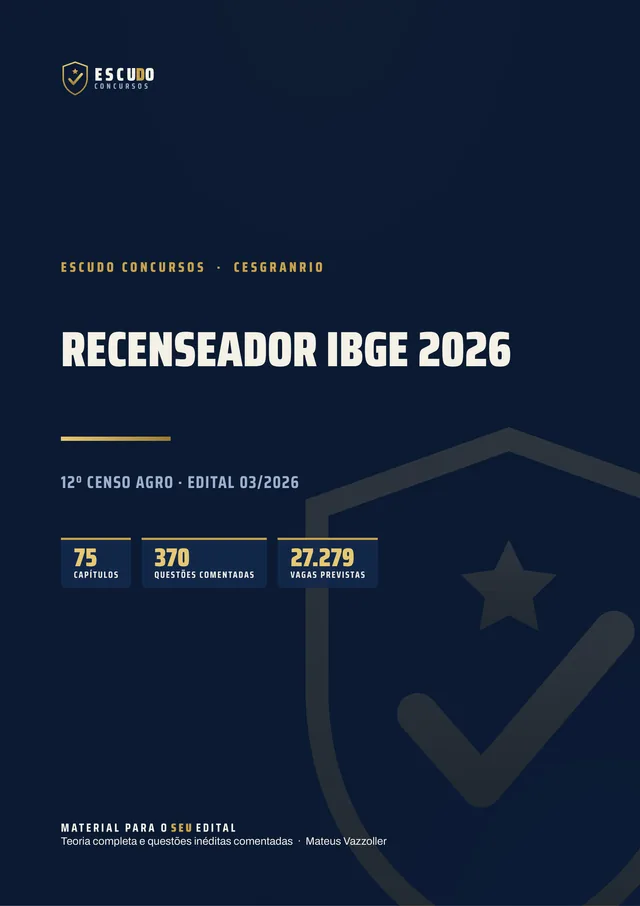
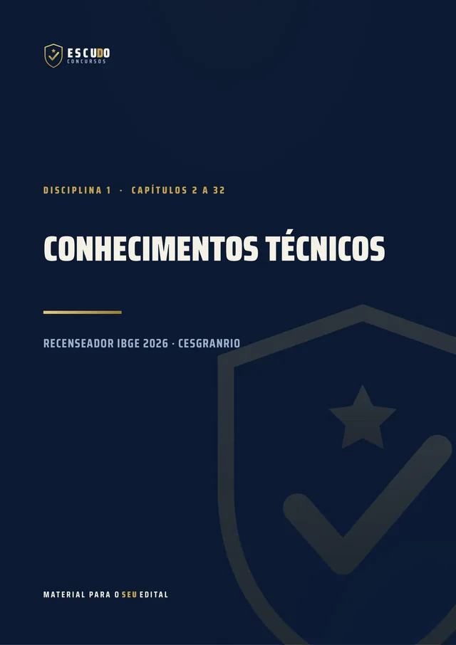
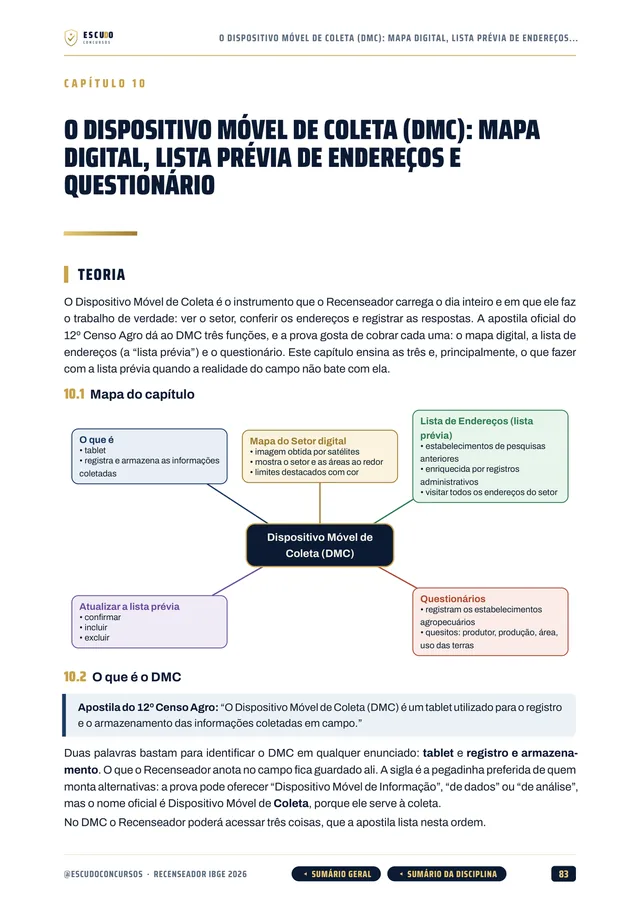
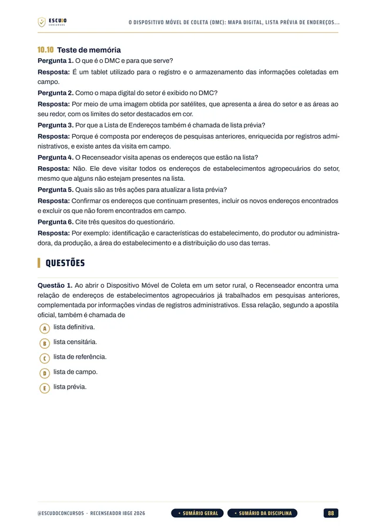
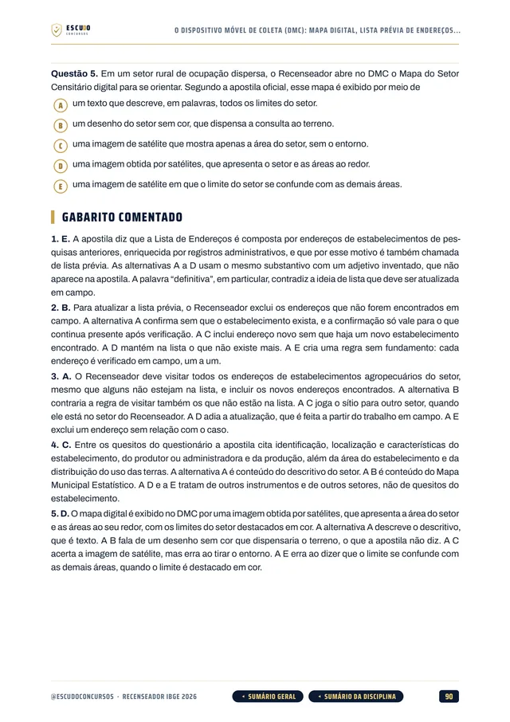

Simulado 1
O meio do caminho
Para medir onde você está depois de estudar a teoria e ajustar o estudo enquanto ainda dá tempo.
30 dias após a compra


370questões
comentadas
IBGE 2026 · Edital 03/2026 · Apostila em PDF
São 27.279 vagas de Recenseador no 12º Censo Agro, e Conhecimentos Técnicos vale metade da prova. O seu material cobre a apostila oficial inteira? Curso feito a partir do Edital 03/2026 da Cesgranrio, item por item, com questões de A a E, como na prova, e gabarito comentado.
R$29,90
Curso completo, com acesso imediato.
O concurso
O Processo Seletivo Simplificado do IBGE (Edital 03/2026, publicado em 5 de novembro de 2026) abriu 27.279 vagas de Recenseador para o 12º Censo Agropecuário, Florestal e Aquícola. A exigência é o ensino fundamental. A remuneração tem parcela fixa de R$ 1.741,00 e parcela variável por produção que pode chegar a R$ 2.629,00 por mês, com auxílio-alimentação de R$ 1.192,00. O contrato é de até 6 meses, prorrogável. As inscrições vão de 6 a 25 de novembro de 2026, no site da Fundação Cesgranrio, com taxa de R$ 70,00.
A prova objetiva da Cesgranrio é em 31 de janeiro de 2027, das 13h às 17h: 60 questões de 5 alternativas, de (A) a (E), cada uma valendo 1 ponto.
Conhecimentos Técnicos vale 30 das 60 questões e é o primeiro critério de desempate. O conteúdo é a apostila oficial do 12º Censo Agro indicada pelo edital, e o curso a cobre seção por seção.
Passa quem fizer no mínimo 18 pontos e ao menos 1 ponto em cada disciplina. Língua Portuguesa e Matemática seguem o Anexo III do edital, item por item, com mapas, croquis, escalas e medidas, a rotina do Recenseador em campo.
| Disciplina | Questões | Peso | Pontos |
|---|---|---|---|
| Língua Portuguesa | 15 | 1 | 15 |
| Matemática | 15 | 1 | 15 |
| Conhecimentos Técnicos | 30 | 1 | 30 |
| Aprovação com 18 pontos no total e ao menos 1 ponto em cada disciplina. | 60 | 60 |
O formato
Você estuda lendo, no seu ritmo, pela área de membros da Hotmart ou com os arquivos baixados. O curso foi feito a partir do Edital 03/2026, item por item do Anexo III, e da apostila oficial do 12º Censo Agro que o edital indica para Conhecimentos Técnicos, na versão publicada pela Cesgranrio.
Páginas reais do PDF
Toque numa página para ver em tamanho maior.





O que você recebe
Curso em PDF organizado em módulos pelas disciplinas do edital, com 656 páginas no padrão visual ESCUDO, para ler no computador, no tablet, no celular ou no app da Hotmart. Não há videoaulas.
75 capítulos cobrindo as três disciplinas da prova: Conhecimentos Técnicos (31 capítulos), Língua Portuguesa (22) e Matemática (21), mais a apresentação da prova.
370 questões inéditas com 5 alternativas, de (A) a (E), no estilo da Cesgranrio, todas com gabarito comentado: por que a correta está correta e onde está o erro de cada uma das outras quatro.
Conhecimentos Técnicos seção por seção da apostila oficial: o IBGE e o Censo Agro, a estrutura censitária e as funções do posto, os instrumentos de trabalho e o DMC, navegação e mapas, setores censitários, Povos e Comunidades Tradicionais, endereço, coordenadas, estabelecimento agropecuário, produtores sem área e situações especiais.
Matemática pelo Anexo III, com capítulos próprios de escala, leitura de mapas, croquis e plantas baixas, medidas, áreas e hectares, e Língua Portuguesa com compreensão de texto, pontuação, concordância, regência, verbos e pronomes.
Teoria com recursos para memorizar: mapa de cada capítulo, fluxogramas, esquemas, quadros de "pegadinha" e "não confunda", questão comentada passo a passo, revisão relâmpago e teste de memória no fim de cada capítulo, com casos de campo do Recenseador.
Navegação clicável: do sumário você vai direto ao capítulo, e volta pelo botão do rodapé.
2 simulados inéditos no formato exato da prova (60 questões de A a E, 15 de Português, 15 de Matemática e 30 de Conhecimentos Técnicos), cada um com caderno de comentários.
Área de membros
| Módulo | Conteúdo | Liberação |
|---|---|---|
| M0 Comece aqui | Apresentação do curso e como é a prova. Bônus: PDF completo para baixar e imprimir | Na compra; o PDF completo no 8º dia |
| M1 Conhecimentos Técnicos I | Capítulos 002 a 015 | Na compra |
| M2 Conhecimentos Técnicos II | Capítulos 016 a 032 | Na compra |
| M3 Língua Portuguesa | Capítulos 033 a 054 | Na compra |
| M4 Matemática | Capítulos 055 a 075 | Na compra |
| M5 Simulado 1 | 60 questões no formato da prova, caderno de comentários | 30 dias após a compra |
| M6 Simulado 2 | 60 questões no formato da prova, caderno de comentários | 24/01/2027 (7 dias antes da prova) |
Treino no formato da prova
Cada simulado tem 60 questões de A a E, na divisão do edital (15, 15 e 30), com caderno de comentários.
Simulado 1
Para medir onde você está depois de estudar a teoria e ajustar o estudo enquanto ainda dá tempo.
30 dias após a compra
Simulado 2
Liberado na semana anterior à prova de 31/01/2027.
24/01/2027
Para quem é
Para quem vai fazer a prova de Recenseador do IBGE em 31/01/2027 e quer estudar pelo Edital 03/2026, com Conhecimentos Técnicos, que vale 30 das 60 questões, coberto seção por seção da apostila oficial.
Você tem 7 dias de garantia pela Hotmart. Se não for o que você esperava, pede o reembolso pela própria Hotmart, dentro do prazo.
Sem surpresa na área de membros
Na compra: todas as disciplinas em PDF, uma por módulo, com a teoria e as questões comentadas. É o curso inteiro, para começar a estudar no mesmo dia.
8 dias após a compra: o PDF completo para imprimir. É o mesmo conteúdo dos módulos num arquivo só, liberado depois da garantia de 7 dias.
Simulado 1: 30 dias após a compra, para medir onde você está no meio da preparação.
Simulado 2: em 24/01/2027, 7 dias antes da prova, para o último teste.
O PDF completo e os simulados aparecem bloqueados na área de membros até a data de cada um: não é conteúdo faltando, é a liberação programada.
Dúvidas
Não. É um curso 100% em PDF: teoria, questões comentadas e simulados para ler e resolver.
O acesso é imediato depois da confirmação do pagamento, pela área de membros da Hotmart (web ou app). O PDF completo para baixar e imprimir é liberado no 8º dia.
O Simulado 1 é liberado 30 dias após a compra. O Simulado 2 é liberado em 24/01/2027, uma semana antes da prova.
Não. O Edital 03/2026 tem só Língua Portuguesa, Matemática e Conhecimentos Técnicos, e o curso segue exatamente essas três disciplinas.
Prova objetiva de 4 horas, em 31/01/2027, das 13h às 17h: 60 questões de múltipla escolha com cinco alternativas, de (A) a (E), e uma só correta, cada uma valendo 1 ponto. São 15 de Língua Portuguesa, 15 de Matemática e 30 de Conhecimentos Técnicos. As questões do curso seguem esse formato.
No mínimo 18 dos 60 pontos e ao menos 1 ponto em cada disciplina. Em caso de empate, depois da idade, vale a maior nota em Conhecimentos Técnicos e depois em Matemática.
A apostila oficial do 12º Censo Agro que o edital indica, na versão publicada pela Cesgranrio, seção por seção, inclusive a descrição atualizada das funções do posto censitário.
Não. As 370 questões de treino e as dos simulados são inéditas, escritas no formato do edital, com cinco alternativas, a partir do Anexo III e da apostila oficial.
Ensino fundamental completo, conforme o edital.
Você tem 7 dias de garantia pela Hotmart. Se não for o que você esperava, pede o reembolso.
IBGE 2026 · Recenseador
R$29,90
Curso completo, com acesso imediato.
Material para o SEU edital. ESCUDO Concursos.